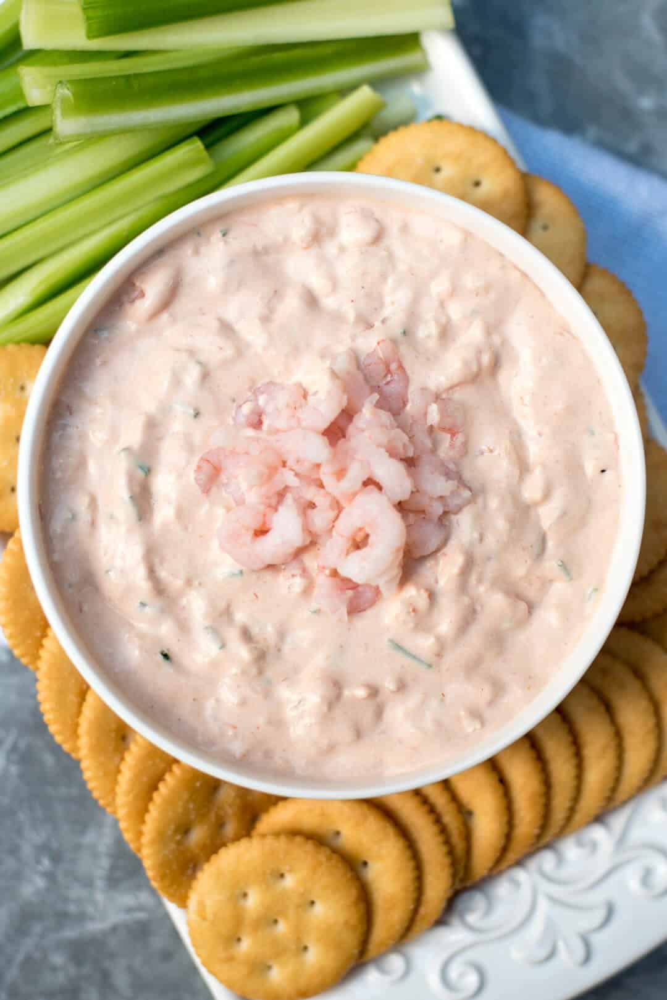

Cajun Shrimp Dip
Yum Yum on the Bayou
Dips are my weakness. This spicy cajun style shrimp dip will have
craving more with every bite!
Ingredients
1 Package of Cream Cheese (softened)
1 Pound of Gulf Shrimp (cooked)
2 Tablespoons of Old Bay Seasoning
1 Tablespoon of Garlic Powder
2 Teaspoons of Cayenne Pepper
1 pkg of Dry Italian Salad Dressing Mix
2 Tablespoons of Worchestershire Sauce
Steps
Mix cream cheese and sour cream together.
Chop your cooked shrimp and add to cream mixture.
Add remaining ingredients and serve with French bread or crackers.